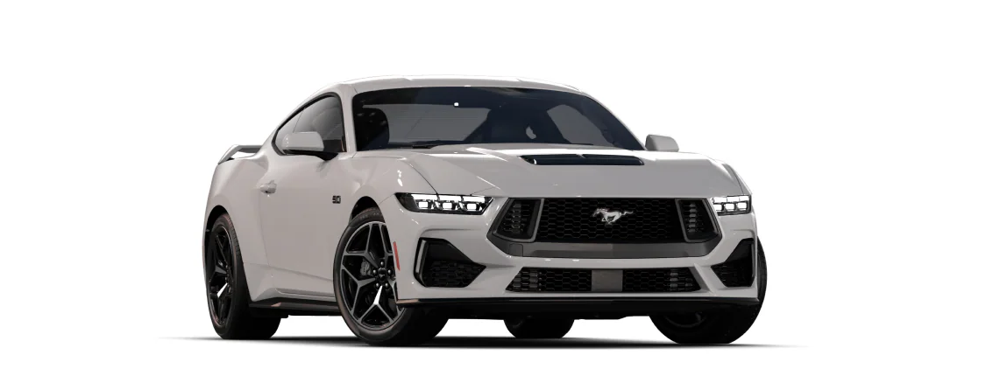

Ford Mustang

The Ford Mustang is a series of American automobiles manufactured by Ford. In continuous production since 1964, the Mustang is currently the longest-produced Ford car nameplate. Currently in its seventh generation, it is the fifth-best selling Ford car nameplate. The namesake of the "pony car" automobile segment, the Mustang was developed as a highly styled line of sporty coupes and convertibles derived from existing model lines, initially distinguished by "long hood, short deck" proportions. Originally predicted to sell 100,000 vehicles yearly, the 1965 Mustang became the most successful vehicle launch since the 1927 Model A. Introduced on April 17, 1964 (16 days after the Plymouth Barracuda), over 400,000 units were sold in its first year; the one-millionth Mustang was sold within two years of its launch. In August 2018, Ford produced the 10-millionth Mustang; matching the first 1965 Mustang, the vehicle was a 2019 Wimbledon White convertible with a V8 engine. The success of the Mustang launch led to multiple competitors from other American manufacturers, including the Chevrolet Camaro and Pontiac Firebird (1967), AMC Javelin (1968), and Dodge Challenger (1970). It also competed with the Plymouth Barracuda, which was launched around the same time. The Mustang also had an effect on designs of coupes worldwide, leading to the marketing of the Toyota Celica and Ford Capri in the United States (the latter, by Lincoln-Mercury). The Mercury Cougar was launched in 1967 as a unique-bodied higher-trim alternative to the Mustang; during the 1970s, it included more features and was marketed as a personal luxury car. From 1965 until 2004, the Mustang shared chassis commonality with other Ford model lines, staying rear-wheel-drive throughout its production. From 1965 to 1973, the Mustang was derived from the 1960 Ford Falcon compact. From 1974 until 1978, the Mustang (denoted Mustang II) was a longer-wheelbase version of the Ford Pinto. From 1979 until 2004, the Mustang shared its Fox platform chassis with 14 other Ford vehicles (becoming the final one to use the Fox architecture). Since 2005, Ford has produced two generations of the Mustang, each using a distinct platform unique to the model line. Through its production, multiple nameplates have been associated with the Ford Mustang series, including GT, Mach 1, Boss 302/429, Cobra (separate from Shelby Cobra), and Bullitt, along with "5.0" fender badging (denoting 4.9 L OHV or 5.0 L DOHC V8 engines).
Executive stylist John Najjar, who was a fan of the World War II P-51 Mustang fighter plane, is credited by Ford with suggesting the name. Najjar co-designed the first prototype of the Ford Mustang known as the "Ford Mustang I" in 1961, working jointly with fellow Ford stylist Philip T. Clark. The Mustang I made its formal debut at the United States Grand Prix in Watkins Glen, New York, on October 7, 1962, where test driver and contemporary Formula One race driver Dan Gurney lapped the track in a demonstration using the second "race" prototype. An alternative view was that Robert J. Eggert, Ford Division market research manager, first suggested the Mustang name. Eggert, a breeder of quarterhorses, received a birthday present from his wife of the book, The Mustangs by J. Frank Dobie in 1960. Later, the book's title gave him the idea of adding the "Mustang" name for Ford's new concept car. The designer preferred Cougar (early styling bucks can be seen wearing a Cougar grille emblem) or Torino (an advertising campaign using the Torino name was actually prepared), while Henry Ford II wanted T-bird II. As the person responsible for Ford's research on potential names, Eggert added "Mustang" to the list to be tested by focus groups; "Mustang", by a wide margin, came out on top under the heading: "Suitability as Name for the Special Car". The name could not be used in Germany, however, because it was owned by Krupp, which had manufactured trucks between 1951 and 1964 with the name "Mustang". Ford refused to buy the name for about US$10,000 (equivalent to $98,240 in 2023) from Krupp at the time. Kreidler, a manufacturer of mopeds, also used the name, so Mustangs were sold in Germany as "T-5s" until December 1978.
Ford Motor Company (commonly known as Ford) is an American multinational automobile manufacturer headquartered in Dearborn, Michigan, United States. It was founded by Henry Ford and incorporated on June 16, 1903. The company sells automobiles and commercial vehicles under the Ford brand, and luxury cars under its Lincoln brand. Ford also owns a 32% stake in China's Jiangling Motors. It also has joint ventures in China (Changan Ford), Taiwan (Ford Lio Ho), Thailand (AutoAlliance Thailand), and Turkey (Ford Otosan). The company is listed on the New York Stock Exchange and is controlled by the Ford family; they have minority ownership but the majority of the voting power. Ford introduced methods for large-scale manufacturing of cars and large-scale management of an industrial workforce using elaborately engineered manufacturing sequences typified by moving assembly lines; by 1914, these methods were known around the world as Fordism. Ford's former UK subsidiaries Jaguar and Land Rover, acquired in 1989 and 2000, respectively, were sold to the Indian automaker Tata Motors in March 2008. Ford owned the Swedish automaker Volvo from 1999 to 2010. In the third quarter of 2010, Ford discontinued the Mercury brand, under which it had marketed upscale cars in the United States, Canada, Mexico, and the Middle East since 1938. Ford is the second-largest U.S.- based automaker (behind General Motors) and the sixth-largest in the world (behind Toyota, Volkswagen Group, Hyundai Motor Group, Stellantis, and General Motors) based on 2022 vehicle production. At the end of 2010, Ford was the fifth-largest automaker in Europe. The company went public in 1956 but the Ford family, through special Class B shares, still retain 40 percent of the voting rights. During the financial crisis of 2007–08, the company struggled financially but did not have to be rescued by the federal government, unlike the other two major US automakers. Ford Motors has since returned to profitability, and was the eleventh-ranked overall American-based company in the 2018 Fortune 500 list, based on global revenues in 2017 of $156.7 billion. In 2008, Ford produced 5.532 million automobiles and employed about 213,000 employees at around 90 plants and facilities worldwide.

Henry Ford (July 30, 1863 – April 7, 1947) was an American industrialist and business magnate. As founder of the Ford Motor Company, he is credited as a pioneer in making automobiles affordable for middle-class Americans through the Fordism system. In 1911, he was awarded a patent for the transmission mechanism that would be used in the Model T and other automobiles. Ford was born in a farmhouse in Michigan's Springwells Township, leaving home at age 16 to find work in Detroit. It was a few years before this time that Ford first experienced automobiles, and throughout the later half of the 1880s, Ford began repairing and later constructing engines, and through the 1890s worked with a division of Edison Electric. He officially founded the Ford Motor Company in 1903, after prior failures in business but success in constructing automobiles. Ford's 1908 introduction of the Model T automobile is credited with having revolutionized both transportation and American industry. As the Ford Motor Company sole owner, "he became one of the richest and best-known people in the world." Aside from "Fordism", Ford was also among the pioneers of the five-day workweek. Ford believed that consumerism was a key to global peace. His commitment to systematically lowering costs resulted in many technical and business innovations, including a franchise system that put dealerships throughout North America and major cities on six continents. Ford was known for his pacifism during the first years of World War I, although during the war his company became a major supplier of weapons. He promoted the League of Nations. In the 1920s Ford promoted antisemitism through his newspaper The Dearborn Independent and the book The International Jew. He opposed United States entry into World War II, and served for a time on the America First Committee board. After his son Edsel died in 1943, Ford resumed control of the company but was too frail to make decisions and quickly came under the control of subordinates. He turned over the company to his grandson Henry Ford II in 1945. He died in 1947 after leaving most of his wealth to the Ford Foundation, and control of the company to his family.
Carroll Hall Shelby (January 11, 1923 – May 10, 2012) was an American automotive designer, racing driver and entrepreneur. Shelby is best known for his involvement with the AC Cobra and Mustang for Ford Motor Company, which he modified during the late 1960s and early 2000s. He established Shelby American in 1962 to manufacture and market performance vehicles. His autobiography, The Carroll Shelby Story, was published in 1967. As a race car driver, his highlight was as a co-driver of the winning 1959 24 Hours of Le Mans entry driving an Aston Martin DBR1. He then went on to win the SCCA USAC Road Racing Sports Car Championship in 1960 driving a Maserati Tipo 61 "Birdcage" and a Chevrolet Scarab Mark II. As an automotive designer, he is known for developing the Ford GT40 along with racing legend Ken Miles, which won at Le Mans in 1966, 1967, 1968 and 1969. As of 2024, it remains the only American built car ever to win the 24 Hours of Le Mans. His and Miles's efforts at Le Mans were dramatized in the 2019 Oscar-winning film Ford v Ferrari.